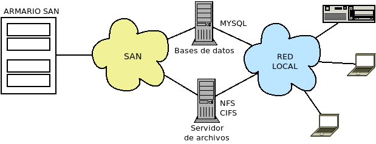

5.5. Arquitecturas de almacenamiento¶
Por arquitectura de almacenamiento entendemos la estrategia por la que los dispositivos de almacenamiento se conectan al equipo (ya sea servidor o estación de trabajo) que los usa. Trataremos:
DAS, almacenamiento de conexión directa en castellano.
NAS, almacenamiento conectado a red.
SAN, red de área de almacenamiento.
Almacenamiento en la nube (cloud storage).
La segunda y tercera estrategias centralizan el almacenamiento en un servidor local y lo ofrecen en red al resto, lo cual tiene sus ventajas frente a mantener los datos almacenados en los distintos equipos (primera estrategia):
El servidor puede dedicarse exclusivamente a ofrecer los datos a los demás y volcar todos sus recursos a ello.
Se necesita definir una sola política de accesos, mientras que de otra forma cada equipo debería definir qué acceso permite a los demás.
Mejora la disponibilidad de los datos al sólo requerirse mantener encendido el servidor de datos y poder implementar en él una solución RAID.
Puede controlarse mejor su funcionamiento y minimizar por tanto las pérdidas por rotura o disfunciones en la red eléctrica.
Puede vigilarse mejor el acceso físico a los datos.
Sólo es necesario planificar las copias de seguridad del servidor de datos.
En contraprestación, al no ser los datos locales al equipo, se depende de que la red funcione correctamente. y el transporte de los datos supone ocupación de ancho de banda.
5.5.1. DAS¶
Es el método más sencillo, ya que el dispositivo de almacenamiento (interno o externo) se conecta directamente al equipo mediante conexiones de distinto tipo como SCSI o su sucesor SAS. SATA, M.2 o USB. La conexión con los discos, pues, es local. En este caso, el sistema operativo tiene acceso a los sectores del disco y dispone un sistema de ficheros sobre ellos (ext4, NTFS. ZFS, FAT, etc) para facilitar el almacenamiento a las aplicaciones.
5.5.2. NAS¶
Es una arquitectura centralizada y en red en la que un servidor se encarga de gestionar y mantener los datos, y compartirlos con el resto de la red mediante algún mecanismo adecuado que les haga accesibles los archivos:
Sistema de archivos en red como NFS o CIFS.
Otros servicios apropiados como:
FTP.
SSH, en concreto SFTP. Incluso pueden llegarse a montar directorios remotos como si de un sistema de archivos en red se tratara con sshfs.
WebDAV, que amplía los métodos de HTTP para implementar las transferencias de ficheros. Los principales servidores web tienen soporta para este protocolo, aunque no es excesivamente usado.
Aplicaciones web creadas para este fin llamadas genéricamente DMS
Ver también
Véase como ejemplo el epígrafe dedicado a SeedDMS.
En esta arquitectura la gestión del sistema de archivos se delega en el servidor (para el que los discos son locales), el cual implementará todo lo que se estime pertinente (redundancia con RAIDs, copias de seguridad, control de accesos) y comparte los datos a través de la red. La solución, a un coste muy bajo, permite implementar una solución centralizada de almacenamiento. Por ello, es una solución muy socorrida en entornos domésticos y pequeñas empresas. Sin embargo, tiene como desventaja que usa la red LAN con lo que ocupa mucho ancho de banda y, además, dadas las velocidades habituales de estos tipos de redes (por lo general, 1Gbps en los mejores casos), presentan un acceso bastante lento que se acentuará cuanto mayor sea el número de conexiones simultáneas y el volumen de las transferencias.
Nota
Por esta razón, los perfiles móviles en los sistemas Windows, sincronizan los datos del servidor con una copia local, en vez de trabajar directamente con el servidor.

Implementaciones
Podemos implementar una solución NAS fundamentalmente de tres formas:
Construyendo el servidor de cero, para lo cual requeriremos un hardware apropiado y un sistema operativo. Para lo primero lo ideal es una caja que permita el remplazo de los discos en caliente porque, muy comúnmente, se implementa un RAID con ellos, como, por ejemplo, èste de Eolize. Como software podemos usar cualquier sistema operativo del que tengamos suficientes conocimientos como para llevar a cabo todas las configuraciones necesarias. Este manual, explica la mayor parte de las herramientas pertinentes.
Una implementación intermedia, que consiste en prepararnos el hardware de cero, pero usar un sistema operativo preparado expresamente para esta tarea. Soluciones muy eficaces de software libre son FreeNas (basada en FreeBSD) y Open Media Vault, basada en la propia Debian. Es una solución más rígida que la anterior, pero razonablemente flexible.
Comprar una solución completa que incluye el software y el hardware. Es, obviamente, la opción más simple, pero limitada a las posibilidades que haya implementado el fabricante. Son muy comunes los dispositivos de Synology y QNAP.
Ver también
Consulte en uno de los apéndices cómo crear un NAS con Open Media Vault.
5.5.3. SAN¶
Es una arquitectura de almacenamiento en red en que se dispone una red de alta capacidad dedicada exclusivamente a la transferencia de los datos:
En la red SAN los servidores acceden al almacenamiento a bajo nivel (sectores) como si de discos locales se tratara a través de una HBA, esto es, una tarjeta conectada a una ranura PCIe que permite la conexión a la red SAN. Por ejemplo, esta es una de ellas (por cortesía de Wikimedia):

Estos servidores, a su vez, ofrecerán los datos a más alto nivel a los clientes de la red.
Implementaciones
En una implementación de una red SAN hay tres componentes: el almacén de datos, la red física de conexión y los servidores que utilizan los datos.
- iSCSI
Es un protocolo que permite la transmisión de comandos SCSI en redes TCP/IP por lo que los servidores pueden comunicar con el almacenamiento incluso aun encontrándose en redes distintas y a través de una simple tarjeta de red. Son una solución barata de implementar y, gracias a la generalización de las redes a 1Gbps, pueden utilizarse líneas de cobre y dispositivos de red habituales.
El almacén de los datos, que se denomina iSCSI target, ni siquiera requiere que los discos sean SCSI, puede tratarse de un equipo con el software adecuando para cumplir la función de servidor.
Los servidores requerirán un cliente que transforme el flujo de datos es un dispositivo virtual (llamado iniciador iSCSI):
Si la tarjeta de red es una tarjeta convencional, el inicializador implementará el propio sistema operativo.
Existen HBA iSCSI que incorporan el inicializador en el propio adaptador y liberan a la CPU del trabajo de conversión.
La solución, pues, puede llegar a no requerir ningún hardware específico y en consecuencia ser muy barata.
Ver también
Para la implementación de solución con Debian haciendo la labor de servidor (target) y cliente (initiator), puede consultar el tutorial de tecmint.com
- AoE
Es un protocolo para acceder a dispositivos de almacenamiento a través de la red. La diferencia fundamental con iSCSI es que el protocolo no depende de capas superiores a la 2, por lo que no es enrutable y tanto el AoE target como el AoE initiator deben hallarse en la misma red. En compensación, el rendimiento es mayor, por cuanto no pierde capacidad efectiva de transferencia por las cabeceras de los paquetes o los datagramas1 En cambio, coinciden ambas soluciones en su bajo coste, ya que la red puede ser una red convencional de cobre.
Ver también
Para la implementación de una solución con Debian haciendo las labores de servidor y cliente puede consultar el tutorial de howtoforge.com.
- FC (Canal de fibra)
Esta implementación en cambio se basa en la transmisión mediante fibra lo que implica montar una costosa red (incluidos switches de fibra) con esta tecnología y dotar a los servidores que acceden al almacenamiento de HBAs a los que se conecte la fibra y ofrezcan a su sistema operativo los dispositivos virtuales. El protocolo usado en esta solución implementa una pila propia distinta a la de TCP/IP, por lo que, como AoE, no es enrutable. Existe, sin embargo, el protocolo FCIP para encapsular en paquetes IP el protocolo de canal de fibra.
Su ventaja sobre las dos soluciones anteriores es que alcanza velocidades de hasta 8Gbps.
5.5.4. Almacenamiento en la nube¶
En los últimos años, con la proliferación de las conexiones a internet de fibra óptica, ha tomado fuerza el almacenamiento en la nube, que consiste en el almacenamiento remoto de los datos, los cuales se alojan en espacios de almacenamiento virtualizados aportados por terceros2.
Básicamente consiste en que los clientes contratan con compañías que disponen de centros de procesamiento de datos, una determinada capacidad de almacenamiento que es dispuesta por la compañía a través de la virtualización de recursos en sus servidores físicos y es administrada por el servicio informático del cliente.
5.5.5. Ejercicios sobre NAS¶
Virtualice un NAS del siguiente modo:
Prepare el hardware construyendo una máquina virtual con seis discos:
Uno dispondrá de 4GiB y servirá para almacenar el sistema operativo (OpenMediaVault).
Los otros cinco serán de 1GiB y serán para datos.
Instale una OpenMediaVault en el disco correspondiente para convertir la máquina en un NAS.
Mediante la interfaz web, prepare el NAS del siguiente modo:
Los cinco discos de datos se distribuirán en dos RAIDs:
Un RAID 1 de dos discos.
Un RAID 5 de tres discos.
El RAID 5 se compartirá para que puedan acceder a él clientes Windows. Se compartirá con el nombre «BAÚL». Tendrá acceso para invitado.
El RAID 1 será accesible por FTP.
Existirán dos usuarios:
jefe que podrá acceder a ambos dispositivos con todos los permisos.
secretario que podrá acceder al recurso del RAID5 con todos los permisos.
Enlaces de interés
El sitio GuilleSQL dedicado a Microsoft SQL Server tiene una serie de artículos dedicados al almacenamiento.
Notas al pie
- 1
Consulte esta comparativa entre AoE y iSCSI
- 2
Tenga presente que las tecnologías SAN (iSCSI nativamente, pero también FC y AoE si se encapsulan pueden proveer almacenamiento remoto). También un NAS, claro.